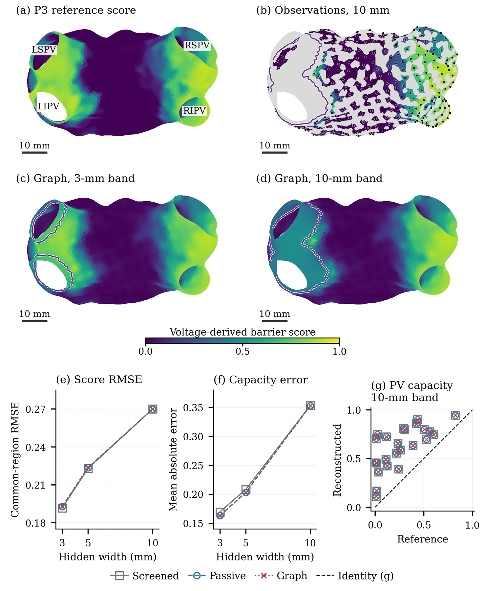

Continuum model
The reconstruction remains well posed where observation confidence vanishes. Steep classifiers converge to a unique state governed by the sign graph.
Sparse maps can miss residual conduction pathways. We reconstruct a continuous substrate field, then test the electrical propagation it supports.
Across six clinical left-atrial maps, narrowing the hidden band from 10 to 3 mm reduced the graph method’s mean conductance error by 54%. The active correction had much smaller effects, which depended on the quantity being measured.

In the ring experiment, the reconstructed contour was closed after thresholding. Its tissue nevertheless transmitted excitation that the reference barrier blocked. The disagreement persisted through the tested numerical refinements.
Two prescribed gaps differed in passive conductance by only 0.0975%, yet produced different exit-paced capture outcomes. The contrast persisted across the tested grids. The entrance-paced result was more sensitive to spatial resolution.
On the P3 atrium, narrowing the hidden band reduced simulated arrival error from 22.36 to 6.69 ms. We note that Absolute arrivals are sensitive to mesh refinement.
Reported arrival errors use the smaller time step and the comparison (see the manuscript for further details). Mesh refinement changed absolute arrival times by approximately 12–14 ms.
The reconstruction remains well posed where observation confidence vanishes. Steep classifiers converge to a unique state governed by the sign graph.
The weighted anisotropic formulation uses a strongly convex predictor. Quantitative bounds distinguish classifier approximation from the error left by the numerical solver.
Stability estimates link changes in substrate to changes in the EP state. Preserving capture decisions additionally requires uniform voltage control and a margin from the decision threshold.
The repository includes the simulation and analysis scripts, input data, and the executed notebook with all manuscript tables and figures.
python -m pip install -r requirements.txt
python code/reproduce.py --workers 6